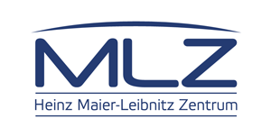
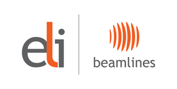
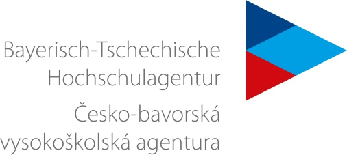
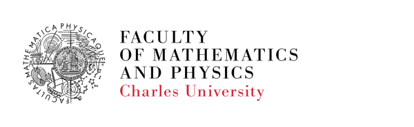

10 bavarian and 10 czech advanced Master/early PhD students
Neutron diffraction and spectroscopy. Crystal growth, magneto-optical ellipsometry, Raman scattering. Open data.
The school is free of charge (travel expenses included). Each participant needs to present their own research in a 5 minute presentation. The will be a best student presentation prize.
The scope of this mini-school is to bring the world of large scale facilities closer to advanced Master/early PhD students, to broaden their scientific horizons and to win them as future users.
The first part of the mini-school will take place at the Heinz Maier-Leibnitz Zentrum in Munich, where a series of lectures on neutron scattering techniques will be organized. The second part of the mini-school will take place in Prague at the MGML research infrastructure at the Charles University and the ELI beamlines research center. The mini-school will be closed with sessions dedicated to data treatment and publishing, following F.A.I.R. principles and ways of sharing scientific data. In addition, the students will get an opportunity to present their own projects during a short presentation. Talks will be evaluated and the best talk will win a small prize.
The lectures will give a broad overview on the different neutron scattering techniques available
at the MLZ:
MLZ Garching
We will see the reactor pool and learn how neutrons are produced. The tour will continue in the neutron guidehall and experimental hall, where 27 state-of-art instruments are operated.
14:00 - 17:00MLZ Garching
In Prague we will start with talks on magneto optics and sample growth before visiting the MGML facilities.
MGML Karlov campus, Prague, CZ
After the lectures, there will be a guided tour through the crystal growth and pressure labs at Karlov Campus.
14:30 - 16:00MGML Karlov campus, Prague, CZ
We will transfer to Troja Campus where we will visit the low temperature/high field laboratories.
16:30 - 18:00MGML Troja campus, Prague, CZ
At the ELI Research Center we will first listen to lectures on different laser based techniques and then there will be a tour of the laser laboratories.
ELI Beamlines, Dolní Břežany, CZ
Each student will present their own research in a short presentation (5 minutes strict). The best presentation will win a small prize!
14:00 - 17:00ELI Beamlines, Dolní Břežany, CZ
On the last day of our mini-school, we will dive into the topic of open science and open data with lectures about:
Charles University, V Holešovičkách 2, Prague, CZ

Neutrons for Research, Industry and MedicineThe MLZ opens up the scientific use of the FRM II scientific reactor. Scientists from all around the world can apply for measurement time at about 30 different scientific instruments. More than 1000 scientists use the FRM II’s neutrons for their experiments and investigations, annually.
MGML offers open access for external users to an instrument suite dedicated to measurements of physical properties of materials in a wide range of temperatures, magnetic and electrical fields, and hydrostatic & uniaxial pressures.

the world's most intense laser systemWith ultra-high peak powers and focused intensities we offer unique sources of radiation and particle beams to our users. These beamlines enable groundbreaking research not only in the fields of physics and material science, but also in biomedical research and laboratory astrophysics.

We proudly acknowledge The Bavarian-Czech Academic Agency. They provided funds for this workshop via their "Bayerisch-tschechische akademische Projekte 2020" funding programme, grant number BTHA-AP-2020-25.
Technical university Münich is the recipient of the subsidy and the organizer of the entire mini-school.

Charles University hosts the Czech part of the talks and they also sponsor mini-school dinner.